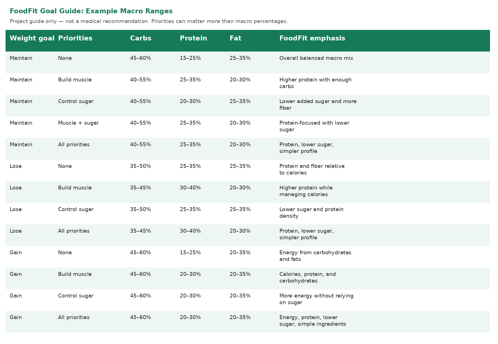

FoodFit
Choose a demo food and see how it fits your goals.
Weight goal
Nutrition priorities
Choose a demo product
Nutrition
Macro ratio
Why this score?
Ingredient flags
Ingredients
FoodFit Goal Guide

Choose a demo food and see how it fits your goals.
